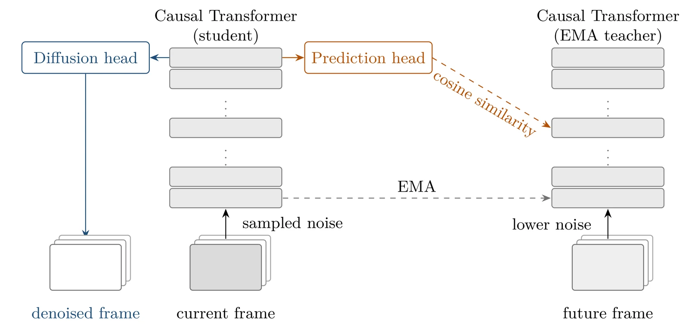

<!-- TODO: co-authors (add them to the authors list and the bibtex) -->
<style>
    :root { --accent: #b45309; }
    @media (prefers-color-scheme: dark) { :root { --accent: #f59e0b; } }
    .df-fig { margin-block: 0 40px; }
    main h2 { margin-bottom: 12px; }
    #results .table-wrap { margin-top: 8px; }
    #rollouts h3 { font-size: var(--text-secondary); font-weight: 600; margin: 24px 0 18px; }
</style>

<section id="tldr">
    <p class="tldr"><strong>TL;DR:</strong> A diffusion world model learns to predict its own future features from the current frame and the actions that follow. The objective is used only during training and leaves inference unchanged. Early results on real-robot video (BridgeData V2, RT-1) are promising; training is still running.</p>
</section>

<section id="method" class="wide">
    <h2>Dynamics Forcing</h2>
    <figure class="fig df-fig">
        <div class="fig-img"></div>
        <figcaption>One training step. The student denoises the current frame as usual. A small prediction head on its layer 4, given the current frame's features and the actions that follow, predicts the layer-8 features of a frame up to H steps ahead, computed by an EMA copy of the same network. Causal attention keeps the student from seeing the target frame. The head is discarded after training.</figcaption>
    </figure>
</section>

<section id="rollouts">
    <h2>Rollouts under different actions</h2>
    <figure class="fig fig--video fig--bleed df-fig">
        <h3>BridgeData V2, 75k training steps</h3>
        <div class="fig-img"><div class="drift-clip drift-clip--wide only-desk" style="max-width:1084px;aspect-ratio:1084 / 430"><video src="bridge_rollouts.mp4" poster="bridge_rollouts.webp" muted loop playsinline preload="none" aria-label="One BridgeData V2 test episode. Top row Shortcut Forcing, bottom row Dynamics Forcing; columns show the real video and rollouts under true, other-episode, negated, no-op and random actions."></video><span class="clip-lab" style="left:0.00%;top:4.19%">Ground truth</span><span class="clip-lab" style="left:16.79%;top:4.19%">True actions</span><span class="clip-lab" style="left:33.58%;top:4.19%">Other episode</span><span class="clip-lab" style="left:50.37%;top:4.19%">Negated</span><span class="clip-lab" style="left:67.16%;top:4.19%">No-op</span><span class="clip-lab" style="left:83.95%;top:4.19%">Random</span><span class="clip-name" style="left:0.00%;top:10.00%">Shortcut Forcing</span><span class="clip-name" style="left:0.00%;top:57.91%">Dynamics Forcing</span></div><div class="drift-clip drift-clip--phone only-phone" style="max-width:538px;aspect-ratio:538 / 430"><video src="bridge_rollouts_phone.mp4" poster="bridge_rollouts_phone.webp" muted loop playsinline preload="none" aria-label="One BridgeData V2 test episode. Top row Shortcut Forcing, bottom row Dynamics Forcing; columns show the real video and rollouts under true and random actions."></video><span class="clip-lab" style="left:0.00%;top:4.19%">Ground truth</span><span class="clip-lab" style="left:33.83%;top:4.19%">True actions</span><span class="clip-lab" style="left:67.66%;top:4.19%">Random</span><span class="clip-name" style="left:0.00%;top:10.00%">Shortcut Forcing</span><span class="clip-name" style="left:0.00%;top:57.91%">Dynamics Forcing</span></div></div>
        <h3>RT-1, 100k training steps</h3>
        <div class="fig-img"><div class="drift-clip drift-clip--wide only-desk" style="max-width:1084px;aspect-ratio:1084 / 430"><video src="rt1_rollouts.mp4" poster="rt1_rollouts.webp" muted loop playsinline preload="none" aria-label="One RT-1 test episode. Top row Shortcut Forcing, bottom row Dynamics Forcing; columns show the real video and rollouts under true, other-episode, negated, no-op and random actions."></video><span class="clip-lab" style="left:0.00%;top:4.19%">Ground truth</span><span class="clip-lab" style="left:16.79%;top:4.19%">True actions</span><span class="clip-lab" style="left:33.58%;top:4.19%">Other episode</span><span class="clip-lab" style="left:50.37%;top:4.19%">Negated</span><span class="clip-lab" style="left:67.16%;top:4.19%">No-op</span><span class="clip-lab" style="left:83.95%;top:4.19%">Random</span><span class="clip-name" style="left:0.00%;top:10.00%">Shortcut Forcing</span><span class="clip-name" style="left:0.00%;top:57.91%">Dynamics Forcing</span></div><div class="drift-clip drift-clip--phone only-phone" style="max-width:538px;aspect-ratio:538 / 430"><video src="rt1_rollouts_phone.mp4" poster="rt1_rollouts_phone.webp" muted loop playsinline preload="none" aria-label="One RT-1 test episode. Top row Shortcut Forcing, bottom row Dynamics Forcing; columns show the real video and rollouts under true and random actions."></video><span class="clip-lab" style="left:0.00%;top:4.19%">Ground truth</span><span class="clip-lab" style="left:33.83%;top:4.19%">True actions</span><span class="clip-lab" style="left:67.66%;top:4.19%">Random</span><span class="clip-name" style="left:0.00%;top:10.00%">Shortcut Forcing</span><span class="clip-name" style="left:0.00%;top:57.91%">Dynamics Forcing</span></div></div>
        <!-- Language Table: add its rollout block here once the 2x2 runs reach a scored milestone. -->
        <!-- DMLab: add its rollout block here once the 2x2 runs reach a scored milestone. -->
    <script>(function () {
        var fig = document.currentScript.parentElement, reduce = window.matchMedia("(prefers-reduced-motion: reduce)").matches;
        function go() { fig.querySelectorAll("video").forEach(function (v) {
            if (v.offsetParent === null) { if (!v.paused) v.pause(); return; }
            if (reduce) { v.controls = true; return; }
            v.preload = "auto"; v.autoplay = true; v.play().catch(function () { v.controls = true; });
        }); }
        go(); window.matchMedia("(max-width: 767px)").addEventListener("change", go);
    })();</script>
    <figcaption>Both models see the same 4 real frames and generate the next 28. The first column is the real video (dark border); the others are rollouts under the true actions, the actions of another episode, negated actions, no-op actions and random actions (grey border on the context frames, blue on generated ones). Each clip is the first exported test episode, not selected.</figcaption>
    </figure>
</section>

<section id="results">
    <h2>Preliminary results</h2>
    <div class="table-wrap">
        <table>
            <thead>
                <tr><th>Training steps</th><th>Shortcut Forcing</th><th class="ours">Dynamics Forcing</th></tr>
            </thead>
            <tbody>
                <tr><th colspan="3">BridgeData V2</th></tr>
                <tr><td>25k</td><td>449.9 / 0.263</td><td class="ours">464.5 / <strong>0.238</strong></td></tr>
                <tr><td>50k</td><td>526.5 / 0.265</td><td class="ours"><strong>454.9</strong> / <strong>0.202</strong></td></tr>
                <tr><td>75k</td><td>322.3 / 0.113</td><td class="ours"><strong>228.2</strong> / <strong>0.108</strong></td></tr>
                <tr><td>100k</td><td>pending</td><td class="ours">72.1 / 0.073</td></tr>
                <tr class="grp"><th colspan="3">RT-1</th></tr>
                <tr><td>25k</td><td><strong>329.7</strong> / <strong>0.177</strong></td><td class="ours">359.7 / 0.212</td></tr>
                <tr><td>50k</td><td><strong>381.2</strong> / <strong>0.203</strong></td><td class="ours">412.2 / 0.259</td></tr>
                <tr><td>75k</td><td><strong>139.0</strong> / <strong>0.109</strong></td><td class="ours">170.9 / 0.113</td></tr>
                <tr><td>100k</td><td>33.9 / 0.075</td><td class="ours"><strong>25.7</strong> / 0.074</td></tr>
                <tr><td>125k</td><td>15.1 / 0.063</td><td class="ours">15.3 / 0.060</td></tr>
                <!-- Language Table: add a group here (protocol: full-episode, tokenizer-reconstruction target). -->
                <!-- DMLab: add a group here. -->
            </tbody>
        </table>
    </div>
    <p class="caption">FVD / LPIPS on held-out episodes, lower is better, 4 sampling steps, same backbone and training recipe for both models. Bold marks a clear difference (beyond the run-to-run spread of FVD on each dataset, or 0.003 LPIPS). Training continues to 250k steps; Language Table and DMLab will be added.</p>
</section>
